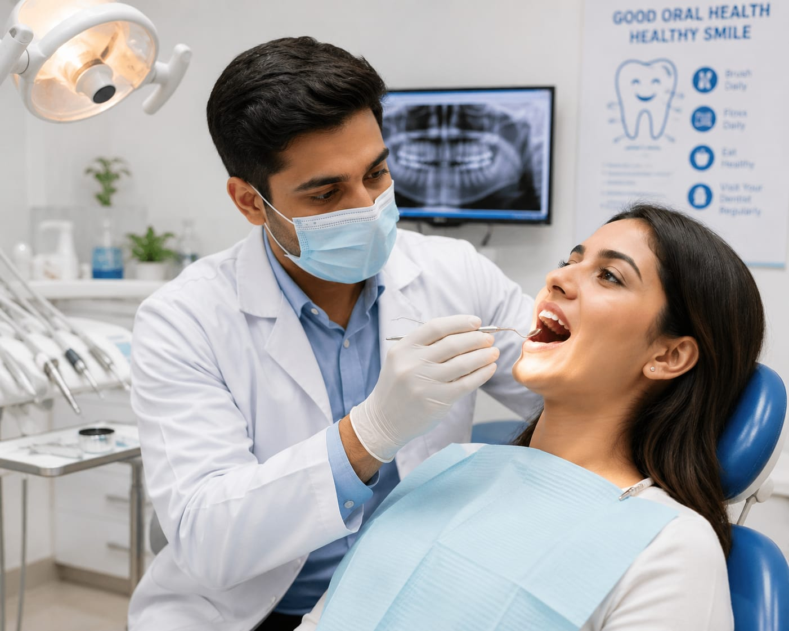

- If you have a tooth pain, cavity, or any problem related to your teeth or gums, you will usually visit a dental clinic
- There, someone examines your teeth, checks the problem, and gives the right treatment to reduce pain and improve oral health
- They may clean teeth, remove cavities, fix damaged teeth, or give advice to maintain healthy teeth and gums
- That person is called a Dentist
- 👉 In simple words: Dentists treat problems related to teeth, gums, and oral health to help people keep their mouths healthy and clean
Dentist
🦷 What Do They Do?

🎓 How to Become a Doctor
These dental degree programs help students learn about teeth, gums, oral diseases, dental treatments, oral surgery, and dental healthcare.
BDS (Bachelor of Dental Surgery)
Duration: 5.5 Years (Including 1 Year Internship) [Note: Some states may have a 5-year duration]
Eligibility: 12th Pass with Physics, Chemistry, and Biology (Minimum 50% Marks)
Exam: NEET-UG
Note: BDS programs include classroom learning, laboratory training, dental clinic practice, and internships to prepare students for real dental treatments and patient care.
These postgraduate dental programs help dentists specialize in advanced dental treatments, oral surgery, orthodontics, prosthodontics, and other dental specialties.
MDS (Master of Dental Surgery)
Duration: 3 Years
Eligibility: BDS Graduate (With Completed Internship)
Exam: NEET-MDS / INI-CET Dental
Note: Postgraduate dental programs provide advanced clinical training, specialization in dental procedures, and hands-on experience in treating complex oral health conditions.
Note:
(Age limits, marks, and admission process may vary depending on the college or state. These courses are available in many colleges and universities across India. You can choose colleges based on your location, budget, and entrance exams.)
🏛️ Top Colleges & Institutes for Dentists in India
(Tap on a college to view details)
After 12th (Degrees & Professional Diplomas)
All India Institute of Medical Sciences (AIIMS), New Delhi Saveetha Dental College, Chennai Maulana Azad Institute of Dental Sciences (MAIDS), New Delhi Dr. D. Y. Patil Vidyapeeth, Pune Manipal College of Dental Sciences (MCODS), Manipal A.B. Shetty Memorial Institute of Dental Sciences, Mangaluru King George's Medical University (KGMU), Lucknow SRM Dental College, Chennai Government Dental College, Kozhikode Government Dental College, ThiruvananthapuramAfter Graduation (PG & Advanced Craft)
All India Institute of Medical Sciences (AIIMS), New Delhi Post Graduate Institute of Medical Education and Research (PGIMER), Chandigarh Saveetha Institute of Medical and Technical Sciences, Chennai Maulana Azad Institute of Dental Sciences (MAIDS), New Delhi King George's Medical University (KGMU), Lucknow Manipal College of Dental Sciences (MCODS), Manipal Dr. D. Y. Patil Vidyapeeth, Pune A.B. Shetty Memorial Institute of Dental Sciences, Mangaluru Government Dental College, Kozhikode Government Dental College, ThiruvananthapuramSTEP 1
Imagine you are working as a Dentist in a dental clinic.
STEP 2
Patients visit you with tooth pain, cavities, gum problems, or other dental issues.
STEP 3
You examine their teeth, take dental X-rays if needed, and identify the dental problem.
STEP 4
You clean teeth, remove cavities, perform dental procedures, and help patients maintain healthy teeth and gums.
STEP 5
You guide patients on brushing, oral hygiene, and ways to protect their teeth from future problems.
STEP 6
If helping people maintain healthy smiles excites you, this career may suit you.
🏥
Dental Clinics
Most dentists work in dental clinics where they perform all dental procedures.
🦷
Hospitals
They handle oral surgeries, dental emergencies, and specialized dental treatments.
🎓
Dental Colleges
Some dentists teach dental students and conduct research in dental colleges and universities.
🚑
Community Health Services
Work in public healthcare centers to improve oral health awareness and treatment access.
🧬
Research Centers
Work on dental research, oral disease studies, and new dental treatment technologies.
🌍
Private Practice
Many dentists open and manage their own dental clinics to provide independent dental care services.
🎓
Dental Colleges
Teach dental students and provide practical training in dental procedures and oral healthcare.
✈️
International Dental Careers
Work abroad in dental clinics, hospitals and healthcare organizations after getting license.
(Click Yes or No for each question)
1. Do you like to help people?
2. Are you interested in learning about the human body?
3. Have you ever thought about learning tooth-related problems and treatments?
4. Have you ever been curious about how dentists clean teeth, fix cavities, or straighten teeth?
5. Imagine a patient coming to you with severe tooth pain. You remove the damaged tooth or do treatments to save it. Does this excite you?